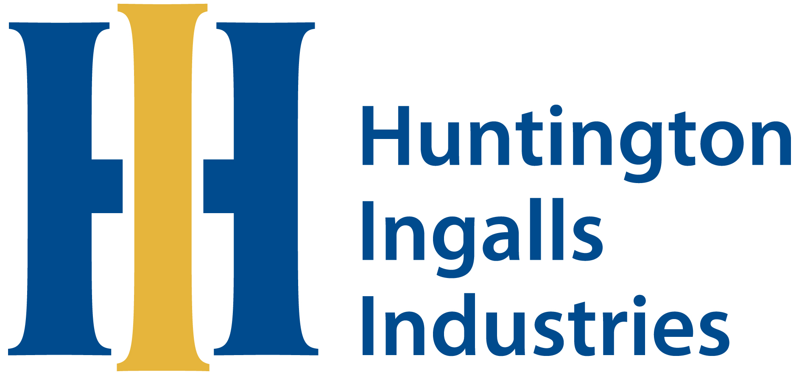

NATIONAL TRU SOLUTIONS, LLC
National TRU Solutions, LLC (NTS) comprises of HII Nuclear Inc. and Atkins Nuclear Secured, LLC and is supplemented by the nation’s top two mining institutions – New Mexico Institute of Mining and Technology (NMT) and the Trustees of the Colorado School of Mines (CSM)—and two small businesses: North Wind Dynamics, LLC (NWD), and SE&C, LLC (SE&C).
Each small business is recognized for their transuranic (TRU) waste experience. NWD also brings added focus on cybersecurity. Together, with DOE, we deliver our vision of One Team, One Mission.
MANAGEMENT APPROACH
NTS has an established Mission, Vision and set of Values that partners with DOE, ensures safety is our #1 priority, establishes a sense of mission urgency, promotes Environmental Justice per the President’s priorities, drives modernization and efficiency through innovation and ensures readiness to meet DOE and State TRU waste management consent requirements. We commit to the safe and timely completion of the three Capital Asset Projects, supporting generator site waste backlog preparation, and ensuring regulatory compliant emplacement space is available to achieve a resilient, sustainable cadence of 17 shipments/week by CY2023. Together, we ensure WIPP is prepared to fulfill its mission for decades to come.
Management Team

Joe Legare
Program Manager

George Sturgis
Capital Asset Projects Manager

Kate Gregory
Integration Manager

Mark Krauss
WIPP Operations Manager

Vince Gomes
Mining/Underground Operations Manager

Stacey Alderson
Environment, Safety & Health Manager
NTS Organization
PARENT COMPANY EXPERIENCE
HII Nuclear Inc. operates one of the most relevant DOE projects to WIPP - the National Nuclear Security Administration (NNSA) U1a site at the NNSS as part of Mission Support and Test Services, LLC (MSTS). From a nuclear operations and management standpoint, this DOE facility is a direct analog to WIPP. Learn more at https://tsd.huntingtoningalls.com/
Atkins Nuclear Secured, LLC leads the Paducah Depleted Uranium Hexafluoride (DUF6) project. They support implementation of the DUF6 integrated management optimization methods/approach to enhance system planning and deconflict resource constraints. Integrate, facilitate, and coordinate program support functions and deconflict support service resources required for Capital Asset Projects (CAPs) and General Plant Projects (GPPs), facility operations, maintenance, and mining. Learn more at https://www.atkinsglobal.com/
SMALL BUSINESS SUBCONTRACTING
Our commitment to small business participation on the WIPP M&O program is evident in both our history of award-winning small business process accolades and demonstrated ability to exceed small business participation requirements. This commitment is embedded in our corporate culture and begins on Day One.
To advance small business participation and exceed the contract requirement for small business subcontracting, we use a proven three-step approach.
Step 1. Implement a procurement process that maximizes specific and meaningful prospects for small businesses, streamlines the award process, and tracks performance with our goals.
Step 2. Enhance the small businesses outreach program to seek and expand the pool of qualified small businesses to bid on task order subcontracted scope, especially among local and regional small businesses.
Step 3. Implement a mentor-protégé program, based on our successes on other contracts, to develop and strengthen small business capabilities.
This approach incorporates lessons learned from our DOE award-winning small business programs at the Savannah River Site Maintenance & Operations contract, Los Alamos Legacy Cleanup contract, Hanford Tank Operations Contract and Hanford Central Plateau Cleanup contract. Based on our projected subcontracting scope, we will exceed the total contract value goal for small businesses by at least 25%. Our Business Manager oversees our small business program and assigns a small business advocate to implement our plan.
COMMUNITY COMMITMENT
National TRU Solutions, LLC (NTS) is committed to the safe, secure, and compliant delivery of the Waste Isolation Pilot Plant Management and Operating contract mission, which includes supporting and strengthening local communities. NTS and its parent companies are committed to the continuous improvement and transformation of our communities. Our community commitments focus on creating educational initiatives that support workforce development, forming partnerships with regional vendors and small businesses, promoting Environmental Justice per the President’s priorities, and helping local community service organizations. Managing WIPP operations provides NTS the opportunity to support regional programs that expand workforce skills and strengthen the local economy.
Having a trained and ready local workforce is vital to successful delivery of the WIPP mission. NTS is uniquely qualified in the state of New Mexico (NM) to bring a first-of-its-kind educational program to southeastern NM. We will accomplish this in collaboration with our Workforce Development and Innovation Advisory Group by expanding the Nuclear Operator Apprentice School and Boot Camp training programs developed by our affiliate, Newport News Nuclear BWXT–Los Alamos, for the Los Alamos Legacy Cleanup Contract (LLCC), executed in partnership with Northern New Mexico College.
NTS’s community commitment covers four primary areas:
Workforce Development
Volunteerism
Regional Small Business Development
Charitable Giving